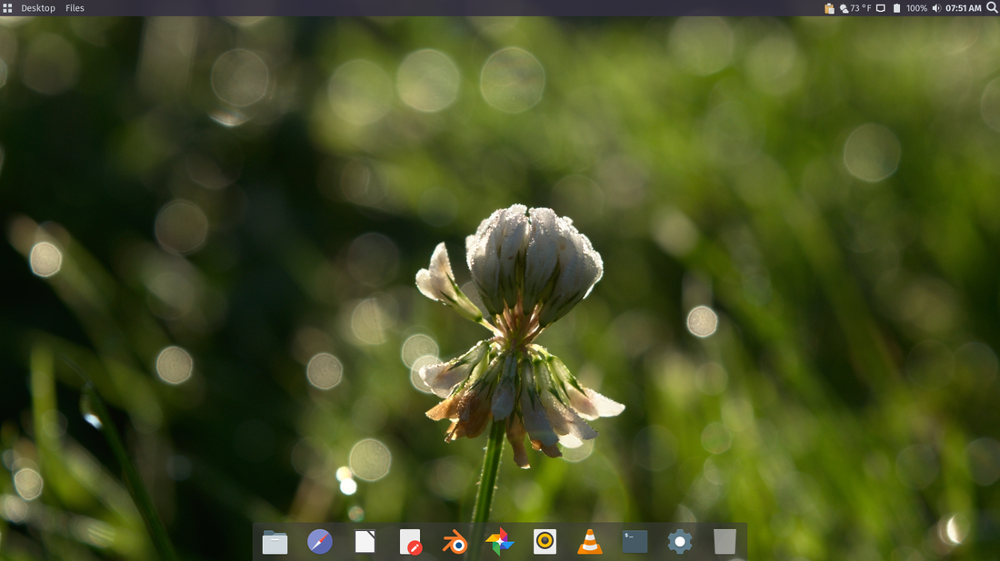

Based on openSUSE Leap, this version is intended for those who want guarenteed stability, and do not need the latest software.
Download
Based on openSUSE Tumbleweed, this version is intended for those who want the latest software, and can manage possible instability.
Download